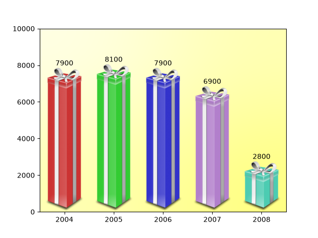

Note
Go to the end to download the full example code.
Ribbon box#

from PIL import Image
import matplotlib.pyplot as plt
import numpy as np
from matplotlib import cbook
from matplotlib import colors as mcolors
from matplotlib.image import AxesImage
from matplotlib.transforms import Bbox, BboxTransformTo, TransformedBbox
class RibbonBox:
# Image.open reads this image as 8-bit; divide by 255 to convert to 0-1.
original_image = np.asarray(Image.open(
cbook.get_sample_data("Minduka_Present_Blue_Pack.png"))) / 255
cut_location = 70
b_and_h = original_image[:, :, 2:3]
color = original_image[:, :, 2:3] - original_image[:, :, 0:1]
alpha = original_image[:, :, 3:4]
nx = original_image.shape[1]
def __init__(self, color):
rgb = mcolors.to_rgb(color)
self.im = np.dstack(
[self.b_and_h - self.color * (1 - np.array(rgb)), self.alpha])
def get_stretched_image(self, stretch_factor):
stretch_factor = max(stretch_factor, 1)
ny, nx, nch = self.im.shape
ny2 = int(ny*stretch_factor)
return np.vstack(
[self.im[:self.cut_location],
np.broadcast_to(
self.im[self.cut_location], (ny2 - ny, nx, nch)),
self.im[self.cut_location:]])
class RibbonBoxImage(AxesImage):
zorder = 1
def __init__(self, ax, bbox, color, *, extent=(0, 1, 0, 1), **kwargs):
super().__init__(ax, extent=extent, **kwargs)
self._bbox = bbox
self._ribbonbox = RibbonBox(color)
self.set_transform(BboxTransformTo(bbox))
def draw(self, renderer):
stretch_factor = self._bbox.height / self._bbox.width
ny = int(stretch_factor*self._ribbonbox.nx)
if self.get_array() is None or self.get_array().shape[0] != ny:
arr = self._ribbonbox.get_stretched_image(stretch_factor)
self.set_array(arr)
super().draw(renderer)
def main():
fig, ax = plt.subplots()
years = np.arange(2004, 2009)
heights = [7900, 8100, 7900, 6900, 2800]
box_colors = [
(0.8, 0.2, 0.2),
(0.2, 0.8, 0.2),
(0.2, 0.2, 0.8),
(0.7, 0.5, 0.8),
(0.3, 0.8, 0.7),
]
for year, h, bc in zip(years, heights, box_colors):
bbox0 = Bbox.from_extents(year - 0.4, 0., year + 0.4, h)
bbox = TransformedBbox(bbox0, ax.transData)
ax.add_artist(RibbonBoxImage(ax, bbox, bc, interpolation="bicubic"))
ax.annotate(str(h), (year, h), va="bottom", ha="center")
ax.set_xlim(years[0] - 0.5, years[-1] + 0.5)
ax.set_ylim(0, 10000)
background_gradient = np.zeros((2, 2, 4))
background_gradient[:, :, :3] = [1, 1, 0]
background_gradient[:, :, 3] = [[0.1, 0.3], [0.3, 0.5]] # alpha channel
ax.imshow(background_gradient, interpolation="bicubic", zorder=0.1,
extent=(0, 1, 0, 1), transform=ax.transAxes)
plt.show()
main()